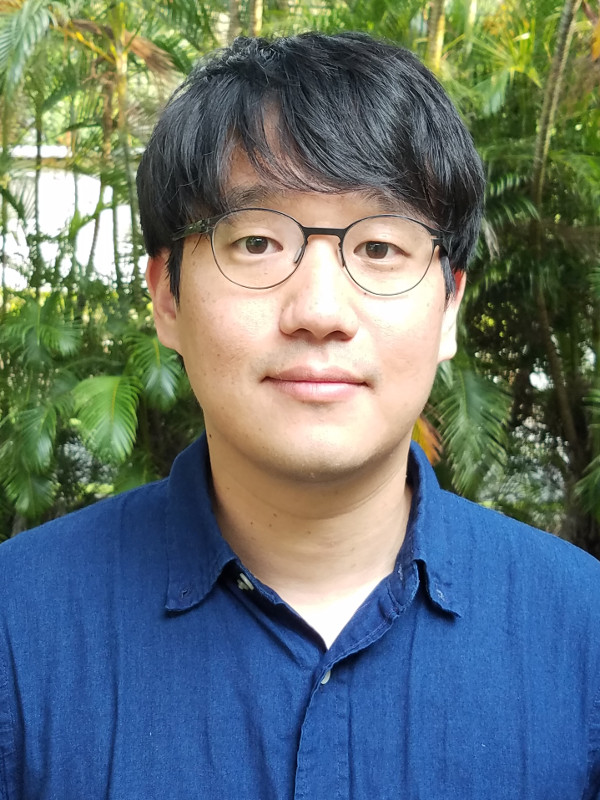

JONGHYUN “HARRY” LEE
|
 |
Jonghyun “Harry” Lee |
Research Interests
Scalable numerical modeling of subsurface flow and reactive transport in HPC
Fast inverse modeling and data assimiliation with uncertainty quantification
Stochastic optimization and optimal control
Physics-informed deep learning and big data analytics
Numerical linear algebra
Recent News
[06/27/2026] Our paper “Prediction of High-Resolution Dynamic Spatial Data Using U-Net and Diffusive-Time-of-Flight” accepted in Advances in Water Resources
[04/22/2026] Our paper “A Neural Operator Emulator for Coastal and Riverine Shallow Water Dynamics” published in Journal of Geophysical Research: Machine Learning and Computation
AAAI 2021 Fall Symposium on Science-guided AI (SGAI-AAAI-21)
PBBFMM3D: Parallel Black-Box Fast Multipole Method for Non-oscillatory Kernels for scalable O(N) matrix-vector multiplication
pyPCGA: Python package for Principal Component Geostatistical Approach released in public
Education
Ph.D. in Civil and Environmental Engineering, Stanford University, 2014
Advisor : Peter K. KitanidisM.S. in Civil and Environmental Engineering, Colorado State University, 2009
Advisor : ilstaffacademic/dbau Domenico BauB.S. in Civil, Urban and Geosystem Engineering, Seoul National University, 2007
Awards
NREL Faculty-Applied Clean Energy Sciences (FACES) Fellow, 2024
NSF-NASA EPSCoR Research Fellow, 2023-2025
Oak Ridge Institute for Science and Education (ORISE) Faculty Fellow, 2018-2023
Oak Ridge Institute for Science and Education (ORISE) Fellowship, 2016-2017
One of 15 early career researchers accepted for IdeaLab 2015: Inverse Problems and Uncertainty Quantification, Institute for Computational and Experimental Research in Mathematics, Brown University, Rhode Island, USA, July 6-10, 2015
Charles H. Leavell Graduate Student Fellowship, Stanford University, 2012-2014
Borland Hydrology New Graduate Student Scholarship, Colorado State University, 2008
Editorial Board
Associate Editor in Journal of Hydrology (Elsevier): 2018 - 2023
Guest Editor in Stochastic Environmental Research and Risk Assessment (Springer) Special Issue: Advances in Uncertainty Quantification for Water Resources Applications, 2021